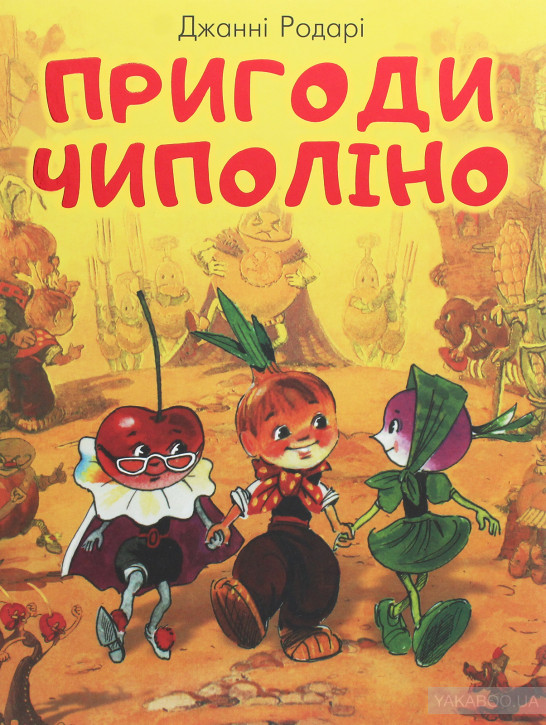
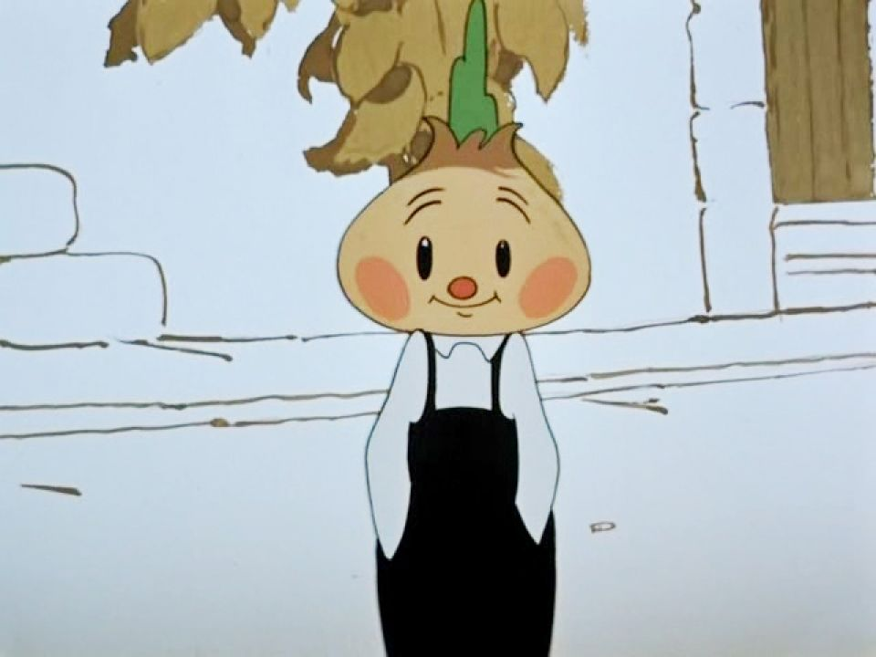

Чиполліно
Чіполліно— радянський повнометражний мальований мультиплікаційний фільм, створений у 1961 році режисером-мультиплікатором Борисом Дежкіним за казкою італійського письменника Джанні Родарі «Пригоди Чіполліно» (1951).
Цибуліно чи Чіполліно?
Цікавий факт: ця книжка вже перекладалася українською у 1961 році і багаторазово перевидавалася. І у другому перекладі головного героя звали Цибуліно. Начебто, автентичність дотримано, але частину свого італійського колориту цибулинний хлопчик все ж таки втратив. До такої самої думки схиляється і перекладач Тарас Лазер, який на прес-конференції говорив: «Були у нас дуже довгі дебати з видавництвом щодо імені самого Чіполліно, Цибульки – нашого головного персонажа. Мені як перекладачеві (і редактору Івану Андросюку, і Сергію Костенку, яким я дуже вдячний за співпрацю), нам здавалося, що краще зробити варіант Цибулько – і ми хотіли назвати «Пригоди Цибулька» або «Цибулькові пригоди». Після довгих суперечок та переговорів з видавництвом ми все ж таки зійшлися спільно на такому консенсусному варіанті, як «Пригоди Чіполліно». Цілком розумно у видавництві вирішили, що це ім'я відоме, знайоме. І я зараз щасливий, що є це видання, воно хороше та приємне». Новий український переклад Тараса Лазера – яскравий, вдалий. І більш повний, без купюр, виготовлених у попередніх випадках з розрахунком на вік дрібних читачів. Книга Джанні Родарі «Пригоди Чіполіно» (Джані Родарі, «Пригоди Чіполліно») – і для дітей, і для підлітків, і для дорослих любителів казок.
- Зміст
- Сюжет
- Персонажі
- Ролі озвучували
- Творці
- Музика
- Виробництво
- Видання
- Відгуки
- Примітки
- Література
- Посилання
Сюжет
Дія мультфільму відбувається у місті, населеному антропоморфними овочами, ягодами та фруктами. Якось під час ходи принца Лимона вулицями Чиполліно випадково наступає йому на ногу, після чого ховається. Той, розлютившись, наказує знайти винного. Старий Чиполлоне, батько Чиполліно, щоб урятувати сина, бере провину він. Як злочинця, його садять до в'язниці. Чиполліно відвідує батька, обіцяючи йому та всім незаслужено заарештованим свободу, після чого, щоб прогодувати себе, влаштовується працювати чистильником взуття. Кум Гарбуз будує собі будинок із пари цегли та кількох дощок на ділянці графинь Вишен із дозволу їхнього покійного батька. Однак синьйор Помідор, який прибув, місцевий економ, незважаючи на роз'яснення, конфіскує житло, яке стає будкою для собаки. Чиполліно та його друзям: куму Тикве, шевцеві дядечкові Винограду, скрипалеві професору Груші та Редиску — вдається приспати тварину снодійним і забрати будинок, який вони, довіривши дядечкові Чернику, ховають у лісі. За наказом принца Лимона нібито за викрадення будинку кума Гарбуза, його онука Гарбуза, дядечка Винограда та професора Грушу заарештовують і поміщають у підвал замку. За допомогою нових друзів, графа Вишеньки та садівника Кактуса, Чиполліно та Редиска звільняють їх. Принц Лимон наказує заарештувати Чіполліно як найголовнішого злочинця. У пошуках солдати-лимончики руйнують парк графинь Вишен. Не витримавши цього, його власниці паніки їдуть за кордон. До справи підключають детектива Моркоу та його собачку Пилососика. Під час пошуків вони виявляють будиночок кума Гарбуза, а потім і Чіполліно, зловити якого їм не вдається. Зрештою головного героя ловлять солдати-лимончики і садять у в'язницю, проте за допомогою Кактуса він звільняється і, взявши у тюремника ключі, відчиняє двері всіх камер, у тому числі й двері камери Чіполлоне. Оголосивши запровадження нових податків, принц Лимон, щоб уникнути заворушень, має намір принародно знищити будиночок кума Гарбуза пострілом з гармати. Однак Чиполліно, що приспів, разом з батьком і друзями загороджує житло собою. Гармата обертається проти принца Лимона, і він гине, а синьйор Помідор і солдати-лимончики тікають із міста. Чиполліно, його батько та їхні друзі будують собі велику хату.
Персонажі
- Чіполліно - хлопчик-цибулина і головний герой мультфільму. При ходьбі він задерикувато підстрибує. Його «волосся» є своєрідною зброєю: синьйор Помідор, розлютившись, схопив Чиполліно за волосся, внаслідок чого останній вистрілив йому їдким цибульним соком у вічі, чому Помідор заплакав. Після арешту батька Чиполліно вирішив виручити його за всяку ціну та познайомився з новими друзями. Він потрапив у в'язницю, де возз'єднався з батьком, а потім разом з ним та іншими своїми друзями здолав жадібного принца Лимона і прогнав його поплічників.
- Чіполлоне - літній батько Чіполліно, цибулина. Щоб урятувати свого сина, каже принцу Лимону, що саме він віддавив йому ногу, за що потрапляє до в'язниці.
- Дядечко Виноград - шевець.
- Редиска - дівчинка, подружка Чіполліно.
- Кум Гарбуз - літній будівельник. З дозволу графа Вишні побудував на ділянці графинь Вишен свій будиночок, але його вигнали з нього синьйором Помідором.
- Кума гарбуза - маленька родичка кума гарбуза. Була заарештована разом із Виноградом, Грушею та Гарбузом. Дала тюремнику ляпас, коли той спробував обшукати її.
- Дядечко Чорниця — літній майстер. Плете кошики. На прохання Чіполліно наглядав за захованим будиночком Гарбуза.
- Принц Лимон - правитель країни і головний лиходій мультфільму. Це йому Чиполліно віддавив ногу, але Чиполлоне врятував свого сина, взявши всю провину він. Згодом Лимон, дізнавшись про те, що причиною всіх невигідних ситуацій у країні є Чиполліно, наказав заарештувати його. Виступаючи на міській площі, принц вигадав податки на опади, а під кінець намагався пострілом з гармати знищити будиночок куму Гарбуза. Але зброя обернулася проти нього, і Лимон загинув від пострілу.
- Синьйор Помідор — вторинний лиходій мультфільму. Керуючий замком графинь Вишен. Намагався вигнати кума Гарбуза з його будиночка. Після того, як Чиполліно виставив його на посміховисько, став переслідувати його та його друзів. У результаті, після загибелі принца Лимона, утік із ганьбою і потонув у морі.
- Графіні Вишні - аристократичні дами-вишні, пов'язані живцями, на кшталт сіамських близнюків. Завжди ходять і говорять разом, жахаються кожній незвичайній події. Тітки графа Вишеньки. Люблять його лаяти. Після того як принц Лимон розорив увесь їхній парк, вони поїхали за кордон.
- Граф Вишенька - хлопчик-вишня, племінник і спадкоємець графинь Вишень. Допитливий очкарик. Звик до того, що його часто лають тітоньки. Після знайомства з Чіполліно та Редиською став їм допомагати. Під час втечі графині Вишні також намагалися відвезти його проти волі, але йому в останній момент вдалося вийти з карети.
- Кактус - садівник графинь Вишень та вихователь графа Вишеньки. Допомагав не лише Вишеньці, а й Чиполліно та його друзям. За допомогою оркестру зміг звільнити Чиполліно та інших ув'язнених із в'язниці. Образ Кактуса позитивніший, ніж образ синьйора Петрушки з оригінальної книги.
- Суниця — служниця графинь Вишен. Допомагає графу Вишеньці.
- Професор Груша – скрипаль. Допоміг Чиполліно пройти у в'язницю, відволікаючи наглядача грою на скрипці.
- Пес Мастіно — жовтий пес, який мав охороняти будиночок Гарбуза, відібраний у останнього синьйором Помідором. Як тільки був посаджений на ланцюг, почав мучитися від спраги. Чіполліно напоїв його снодійним, і пес заснув, що дало змогу Чіполліно з друзями викрасти будиночок і сховати у лісі. На ім'я в мультфільмі не згадується.
- Містер Моркоу — відомий іноземний детектив, одягнений у все чорне. Озброєний тростиною-парасолькою. Діє в парі з песиком Пилососиком, причому сліпо і швидко біжить слідом. Ловив Чіполліно: йому це майже вдалося, але Пилососик, не встоявши перед спокусою, кидається на вуличного собаку і захоплює Моркоу. Зрозумівши, що операцію провалено, містер Моркоу втікає з країни: він наздоганяє карету, в якій їдуть графині Вишні, і сідає на зап'ятки.
- Пилососик - невеликий песик-шукач. Діє у парі з детективом.
Ролі озвучували
- Маргарита Купріянова - Чиполліне
- Сергій Мартінсон - принц Лимон / солдати Лимончики
- Володимир Лепко - один із Лимончиків
- Олексій Польовий - кум Гарбуз
- Григорій Шпігель - синьйор Помідор / 1-й вуличний пліткар
- Віра Орлова - Редиска
- Маргарита Корабельникова - граф Вишенька
- Олена Понсова - графині Вишні
- Георгій Мілляр - містер Моркоу / дядечко Чорниця / 2-й вуличний пліткар
- Ераст Гарін — дядечко Виноград
- Георгій Віцин - Кактус
- Юрій Хржановський — песик Пилососик
Творці
- Автор сценарію – Мстислав Пащенко
- Режисер-постановник - Борис Дежкін
- Художник-постановник - Перч Саркісян
- Художник - Костянтин Карпов
- Композитор - Карен Хачатурян
- Оператор - Олена Петрова
- Звукооператор - Борис Фільчиков
- Редактор - Раїса Фрічінська
- Помічники режисера: Лідія Ковалевська, Ніна Майорова, Світлана Кощеєва
- Художники-мультиплікатори:
- Борис Дёжкин
- Вадим Долгих
- Ольга Столбова
- Владимир Крумин
- Фаина Епифанова
- Рене Овивян
- Рене Овивян
- Константин Чикин
- Виолетта Карп
- Виталий Бобров
- Виктор Арсентьев
- Анатолий Солин
- Художник-декоратор - Віра Валеріанова
- Текст пісні - Вадим Коростильов
- Директор картини - Федір Іванов
Музика
Музику до мультфільму написав композитор Карен Хачатурян. Пізніше вона стала основою для однойменного балету, поставленого 1974 року.
Виробництво
Спочатку сценарист Мстислав Пащенко мав намір екранізувати практично всі епізоди, а також додати оповідача, проте режисер-постановник Борис Дежкін відмовився від цього задуму, вирішивши спростити сюжет фільму. Дежкін буквально з кадрів вивчав мультфільми Діснея, вникаючи в тонкощі роботи американського мультиплікатора.
Видання
Мультфільм увійшов до збірки «Джованні, Чіполліно та Золоте пір'їнка», випущений у 1992 році. У 1980-х роках мультфільм був випущений на VHS-відеокасетах радянською відеокомпанією «Відеопрограма Держкіно СРСР», у 1990-х роках також на VHS компанією «Великий план» та Studio PRO Video. У 2000-х роках мультфільм випущено на DVD компанією «Великий план».
Відгуки
О. Абольник відзначав у мультфільмі точність пластичних характеристик та майстерність режисера, якому ясність сюжету не заважає створити захоплюючий фільм.
Примітки
- Верхоланцева.
- Чиполліне. Союзмультфільм. Дата звернення: 21 жовтня 2020 року.
- Абольник, 1984.
Література
- М. Пащенка. Чиполліно (кіносценарій) // Фільми-казки: сценарії мальованих фільмів / Упоряд. Борис Воронов. - М.: Мистецтво, 1961. - С. 119-162. - 320 с. - 100 000 прим.
- О. Абольник. Дежкін Борис // Режисери та художники радянського мультиплікаційного кіно. - М: В/О «Союзінформкіно», 1984. - 64 с.